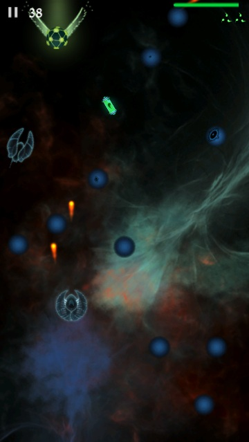
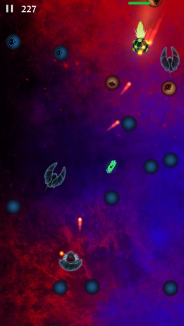
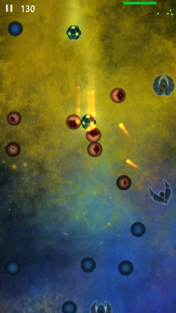
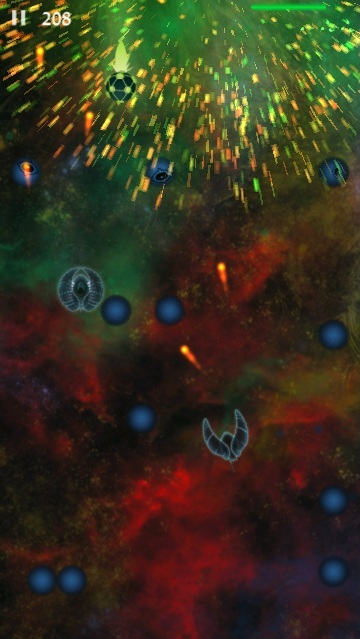
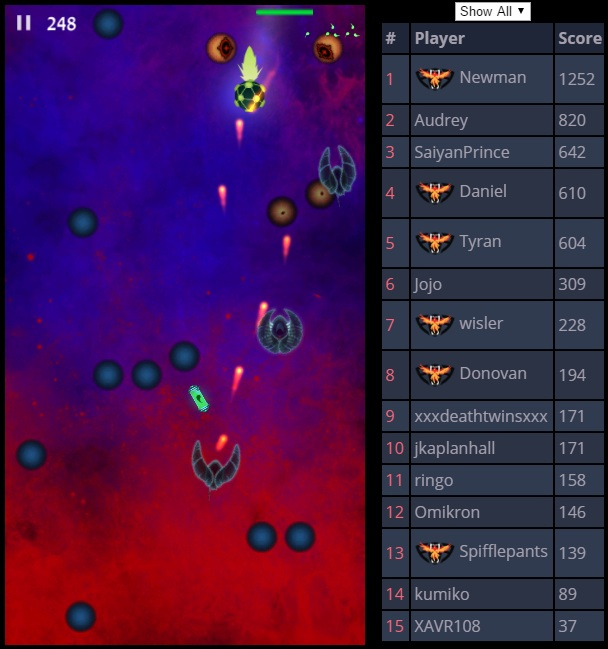
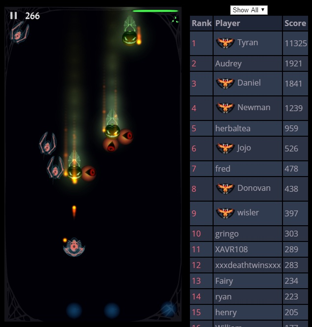
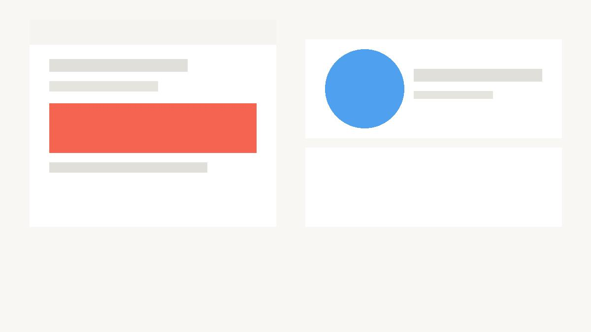

Breach
A one or two sentence summary of what this project is. What was the goal, and what did you build?
Overview
Write a paragraph here about what this project is. What problem were you solving? Who was the audience? What was your role in the team?
Keep it conversational — visitors want to understand your process and thinking, not just the output.




Write a paragraph here describing these screenshots or the context behind them.

Design Process
Describe how you approached this project. What were the key design decisions? What challenges came up and how did you solve them?

Write a paragraph here about what this project is. What problem were you solving? Who was the audience? What was your role in the team?
Outcome
What was the result? Shipped? Won an award? Learned something key? Show the impact of your work here.
